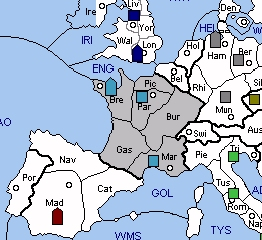

FRANCE (F) had such an easier life in Standard Diplomacy! Two or three builds used to be a certainty in the first year, but now France will be happy to get one. A new SC is available in Switzerland, but this alpine neighbour also provides an extra avenue through which Germany or Italy may attack.
Also, gone is the Iberian pair, which formerly had been so willing to join the republic. Instead, Spain often takes Portugal for itself and may then threaten France with a pair of units. If diplomatic efforts fail, France might decide to limit Spanish growth by moving A MAR-CAT. Apart from forfeiting Switzerland, this can be a risky move because it will be followed by a guessing game. If France guesses correctly, then it will deny Spain a build. If not, then France's new enemy to the south ends up with two units. In either case, can a two-front war with Britain, Germany or Italy be far behind?
Rumania occupies a relatively quiet corner of the Balkans. Wedged in between USSR and Turkey, the Bucharest Army cannot easily vacate its homeland to make space for a build. Even if it could, France will probably need all available builds to defend its homeland. Rumania's prospects grow brighter as the game progresses, but only if it can resist being captured by the winner of the USSR-Turkey struggle.
|
 |
MINOR (Basic): Rumania SUGGESTED MINORS (Advanced): Spain, Czechoslovakia POTENTIAL ALLIES: ITALY versus Britain, Germany, and Spain (Poland) TURKEY versus Germany USSR versus Poland and Turkey |
Suggested Openings for France:
Maginot: |
A MAR S PAR-BUR, A PAR-BUR, F BRE-ENG |
|
France retains control over the fates of Belgium and Switzerland while also challenging German influence in the alps. The move to the English Channel will forestall any pre-emptive strikes by Britain. |
|
Flemish Plunge: |
A MAR-SWI, A PAR-BUR, F BRE-PIC |
|
This opening provides France with the option of forcing either Belgium or Switzerland in the fall, provided that Germany does not move to Burgundy. Beware of British fleets in the English Channel. |
|
Irish Spring: |
A MAR-SWI, A PAR-PIC, F BRE-MAO |
|
France can open to the Mid-Atlantic and perhaps try to grab Ireland in 1930. However, France must build a fleet in 1929 and then correctly anticipate Britain’s fleet movements to earn a build from Ireland. In the fall, Army Picardy can either cover Brest or try to grab Belgium. |
France has much in common with Italy and the two might wish to cooperate. Including Italy's Swedish forces, these two nations can launch attacks on Germany from the north, south, and west. In addition, Italy can help France wipe out the Spanish nuisance and thereby secure a safe corner of the board. The main challenge for this partnership will be achieving peace in the Alps without tying down too many units. Italy may be tempted to occupy Piedmont in the interest of self-defence but this is more likely to lead to a Franco-Italian war. Also, Italian occupation of Munich will effectively bar France's eastward expansion. On the whole, Italy is a poor ally but it may be France's only choice.
Looking elsewhere in the Mediterranean, Turkey might be a helpful partner for France. While the two nations are distant, their minor powers are complementary. Although Turkey will woo German support for Czech occupation of Austria, Turkey will also want support into Bulgaria from France's Rumanian army. The price of Rumanian support might be Czech support for A BUR-MUN in fall 1929. In the event that Turkey reneges on its promise, France could punish Turkey by supporting USSR in subsequent years.
Elsewhere, France can seek an alliance with USSR. While USSR can't attack any of France's major threats, it might permit the growth of Rumania at the expense of either Poland or Turkey. For example, USSR might cede Bulgaria (with support from USSR's Army Athens) on condition than France use the build in the west. Eventually, France might establish a minor foothold in the Balkans, with the goal of pressing north against the either Poland or Germany. Once Turkey is conquered, there is high potential for USSR to stab France for Rumania. Thus, France should work quickly to use any gains to solidify its position elsewhere - possibly in Iberia.
The reader will note the absence of a French-Polish partnership from this list. While initially effective against Germany, such an alliance does not serve France well. Once Germany is conquered, Poland can use its Spanish forces to follow-through against France.